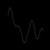

dataset : Attempt2 , with only 4 channels => 3,4,5,6 => P8, P4, P3, P7
hyper-params
-
-
data processing
-
Only band pass 1-20Hz
-
P300 Interval: (0.25-0.3) PS. Even though, I used 0.2-0.5 the acc are same
-
For all channels find the mean

 -
Convert to Image and no norm
-
balances class => finally, I got 300 sets for target and 300 sets non-target data.
model = CNN 2D and FC
result click here, it's too long